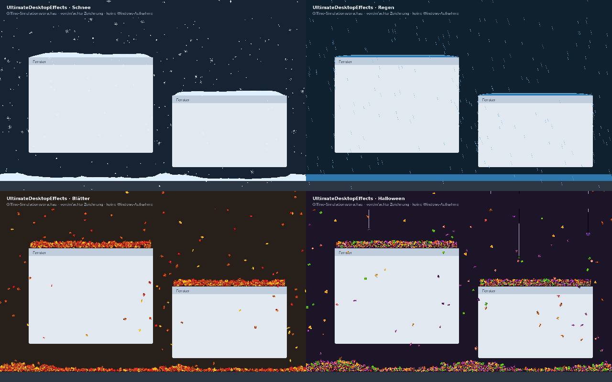

UltimateDesktopEffects
Schnee, Regen, fallende Blätter und Halloween für Windows 10 und 11. Schnee bleibt auf Fenstern liegen, Regen sammelt sich an der Taskleiste und im Halloween-Modus seilen sich Pixelspinnen ab. Jeder Effekt hat eigene Einstellungen und lässt sich über das Symbol im Infobereich auswählen.
Die Modi für Regen, Blätter und Halloween habe ich entwickelt und in einer App zusammengeführt. Die Grundlage für das Windows-Overlay und den Schnee war LayerSnow von flipkips.
